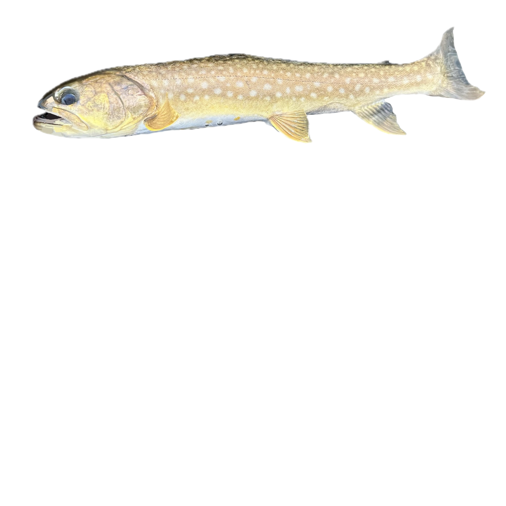
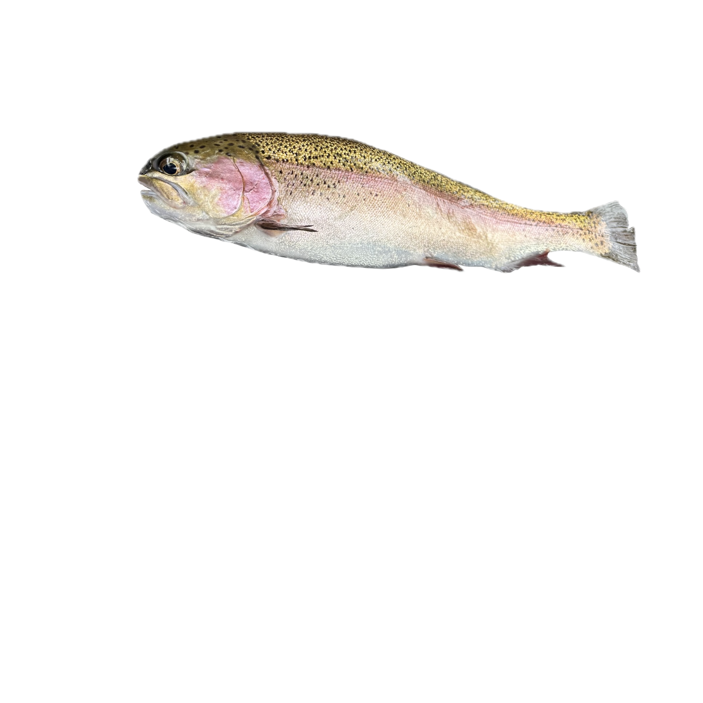
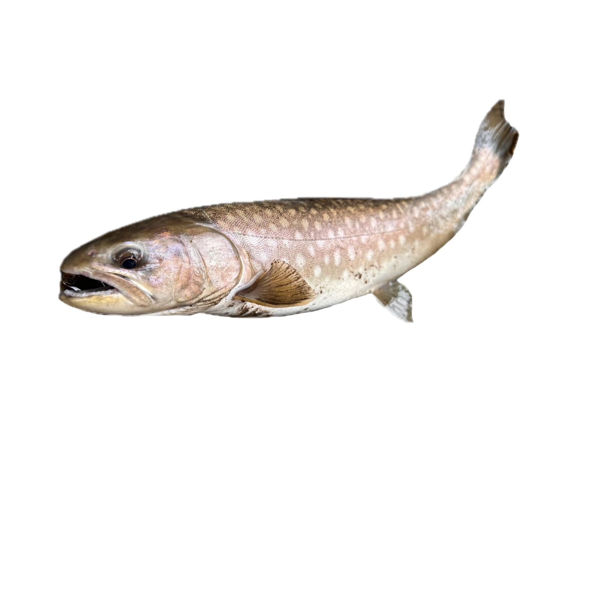
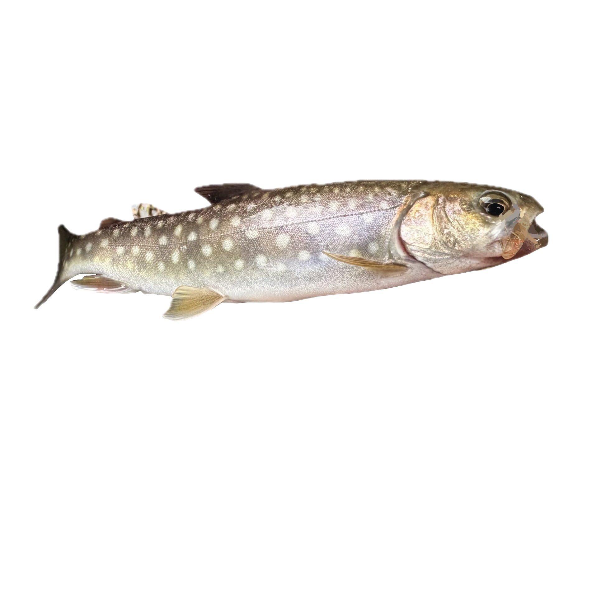
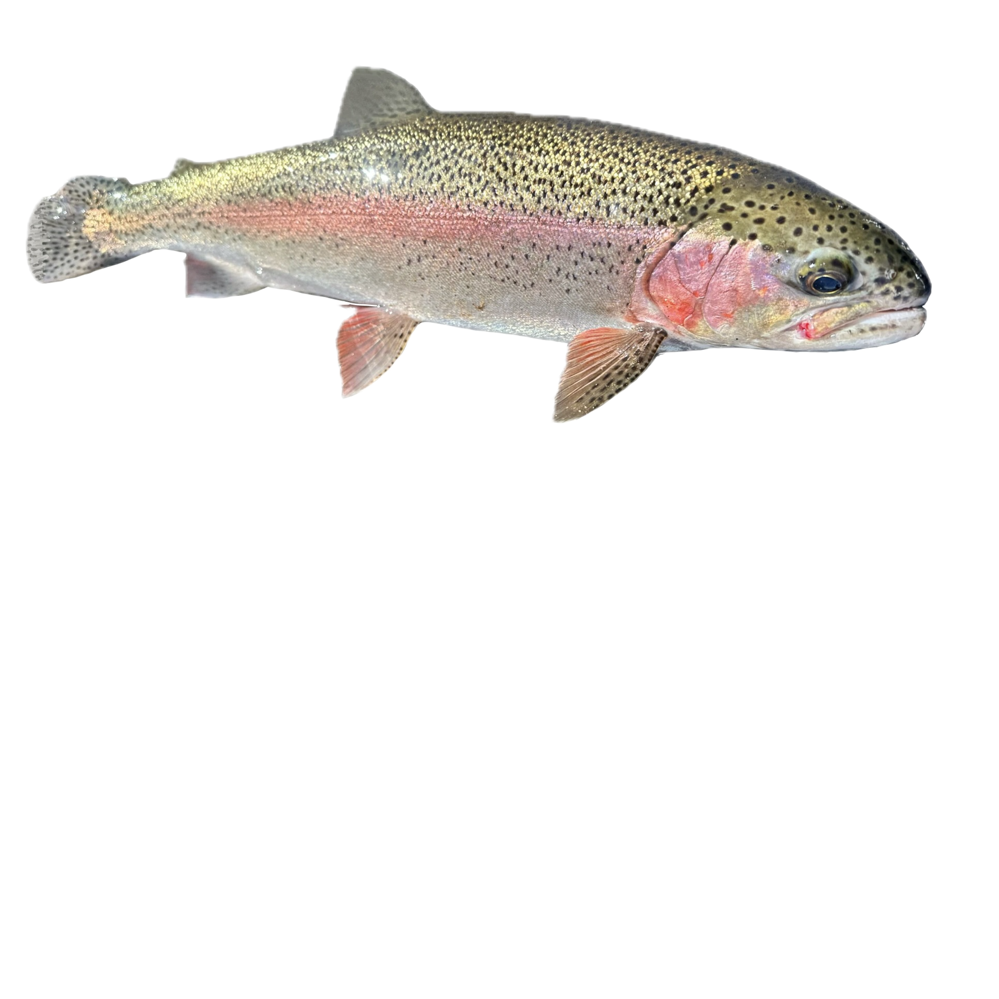
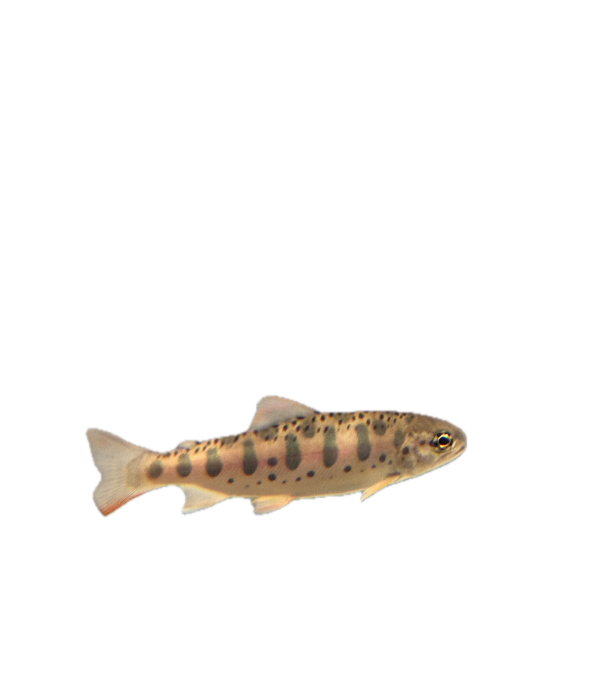
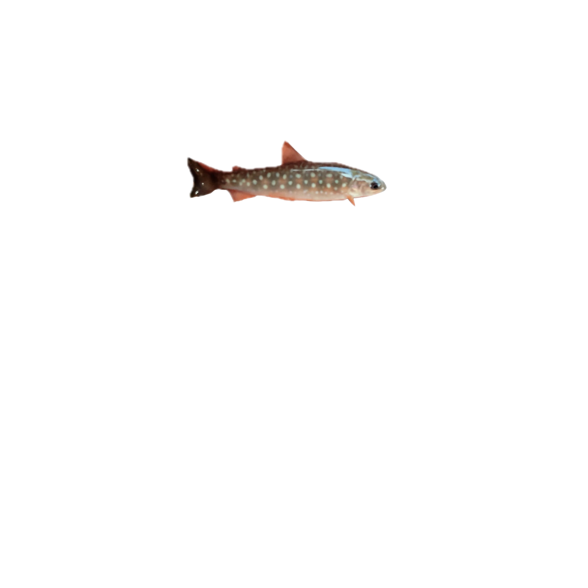
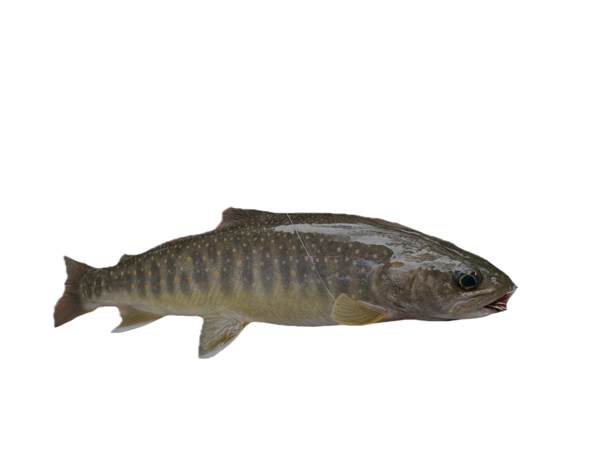

Kokanee salmon
Kokanee salmon spend their entire lives in freshwater, never migrating to the ocean. You can tell by the red coloration, green-olive head, humped back, and hooked jaw that this is a spawning male.

amemasu（アメマス / 雨鱒）, a white-spotted char native to Hokkaido waters

rainbow trout

amemasu（アメマス / 雨鱒）, a white-spotted char native to Hokkaido waters

amemasu（アメマス / 雨鱒）, a white-spotted char native to Hokkaido waters

rainbow trout

yamame （ヤマメ / 山魚 / 山女魚) , a mountain trout/cherry-salmon native to Hokkaido waters

baby yamame （ヤマメ / 山魚 / 山女魚) , a mountain trout/cherry-salmon native to Hokkaido waters
very cutie patootie

oshorokoma (オショロコマ）, a subspecies of dolly varden trout native to Hokkaido waters